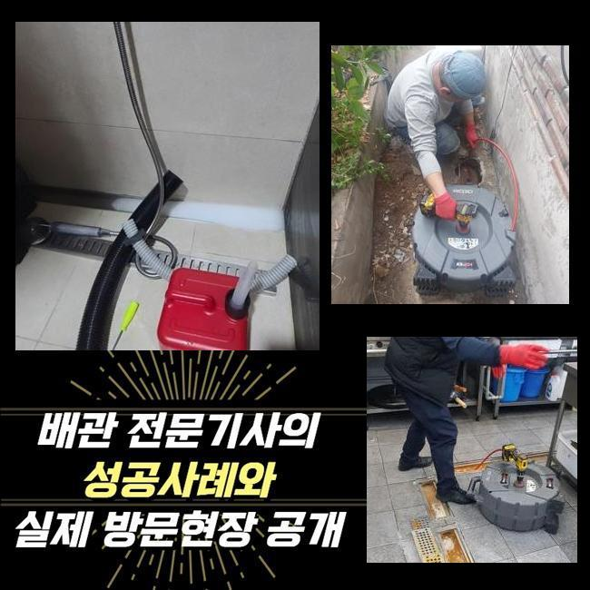
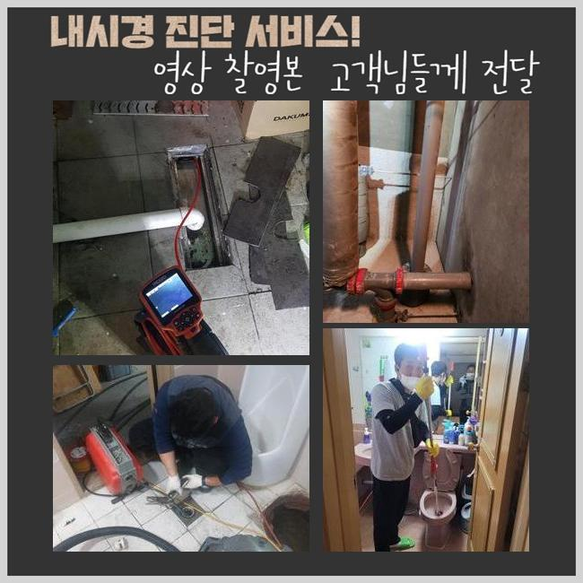
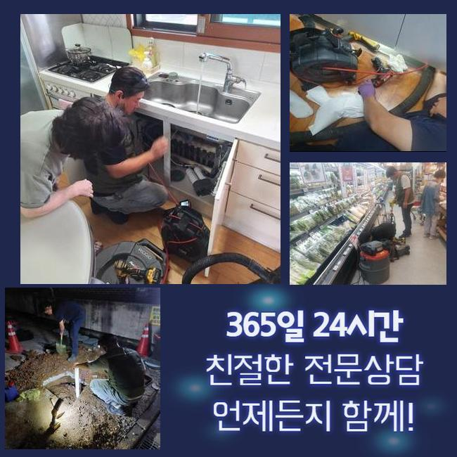
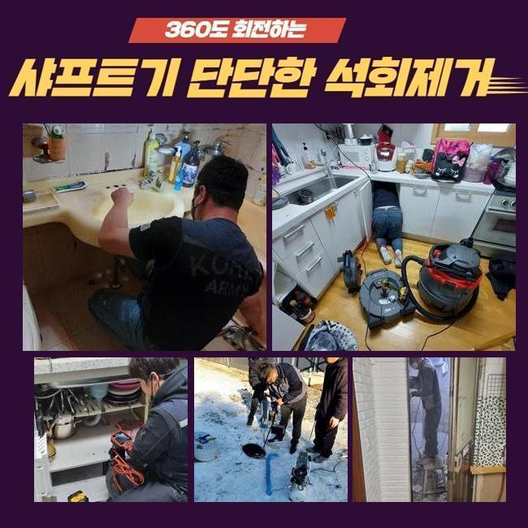
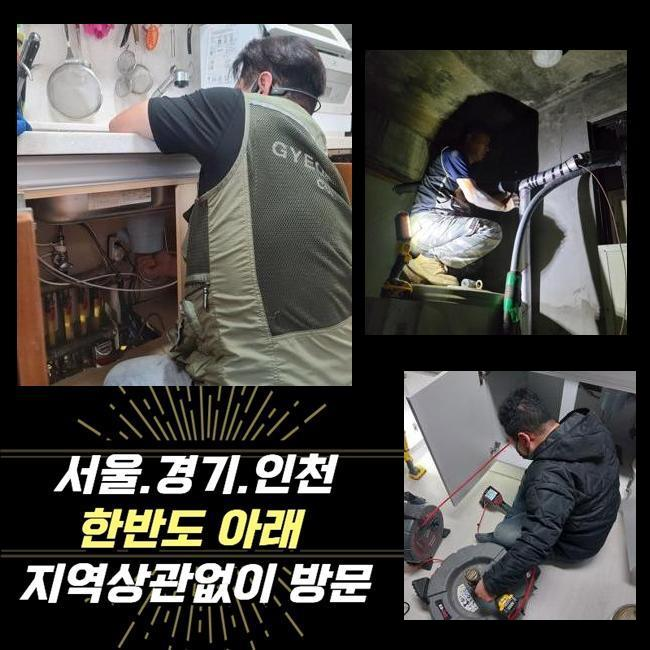
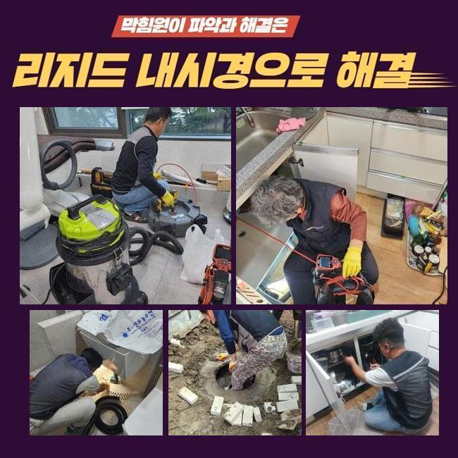

🏠 중동오수관막힘 횡주관청소 수리업체
용인 하수구막힘 전문 시공 후기

📋 작업 개요
- 위치: 용인
- 서비스 유형: 하수구막힘, 배관막힘, 맨홀막힘, 역류해결, 배관청소, 고압세척
- 작업 일시: 2024. 10. 7. 16:43
- 업체명: 하수구수사대 (010-5615-2118)
🔍 문제 상황
중동오수관막힘 횡주관청소 수리업체
보통 하수구가 역류하는 일은 간단한 방법으로 해결할수 있으나 공용으로 사용하는 배관이 망가지게 되었다면 진단할 부분이 많아지고 여러가지 전문적인 기기들을 활용해도 간단하게 해결이 되지 못하는 경우들이 많았습니다
그러한 경우엔 저희업체처럼 다양한 상황에서 처리한 경험들을 갖추고있는 전문업체가 요구되겠죠?
최근에 방문하게 된 복합상가 경우에 일어난 문제사항은 배관이 막힌 것으로 하나의 배수구에서 하수를 내려보내면 또다른 집에 배수와 관련된 문제들이 발견될 가능성이 높은 경우였어요
고층에서 일상적으로 사용되는 물로도 아래세대는 배수가 힘들고 심각할때는 오수가 범람하는 사태가 일어나서 전세대에서 일상적인 활동이 어려워졌습니다
이처럼 빈번하게 발생되는 막힘현상으로 의뢰인분께서 하수관의 강한 압력 세정을 의뢰하셨어요
전문진은 하수시스템을 파악하고 전반적으로 심사숙고하여 과정에 들어가기전에 견적이 얼마정도 나오는지 미리감치 보여드립니다
의뢰인의 집에 도착하여 하수시스템을 확인해봤더니 적절한 주기에 청소가 되질 않아서 결국엔 막힌 상황으로 보였습니다

🔎 원인 분석
💡 전문가 진단: 정밀 진단 장비를 사용하여 슬러지의 고착 여부를 판명하고 타격/세척 작업을 실시했습니다.
일반 가정이나 가게들에서 발생하게 되는 이물질을 흡입하는 스프링장비를 활용 해봤거나 쌓인 불순물을 갈아내는 샤프트기계로 초반에 작업을 했었다면 메인의 배수관까지 막히는 일은 없었을 거예요
장기간 메인의 하수라인이 막혀버린 상황들이라 말씀드렸던 장비들로는 수리를 하기가 불가능하다고 하셨습니다
배수구 진단을 해보니 지속된 막힘현상으로 하수로가 변형된 부분이 전반적으로 보여지고 있었어요
불순물과 슬러지들이 적재되면서 하수관에 하중들이 실리게되어 배관의 지름이 늘어나게 되는 경우들이 있어, 이러한 일을 방지하기위해 스테인리스를 사용해 만들어진끈으로 단단하게 고정해두고 세정작업들을 진행하고 완벽하게 정리했습니다
바깥으로 이어진 배수로에서 하수로 안을 볼 수 있는 장치를 집어넣어 세척과정이 들어가야하는 부위를 하나씩 파악하며 진행하고 완벽하게 정리했습니다
내시경기기는 침전물이나 오염원이 관내벽에 쌓여 굳어진 상황을 눈으로 확실한 확인할수 있도록 하는 장비입니다
고압의 세척기기는 고압력의 수압힘을 가해 발사되는 물줄기로 이물질을 클리어하게 세정해내며 배관에만 사용할 수있게 만들어진 기기를 활용합니다
배수관이 여러각도였고 장치가 잘 안닿는 일이 많아 시간이 지연되었고 세정작업시 관벽에 끈적하게 붙어있는 오염원을 처리 해나가야하는 현장이여서서 신경을 다양한 곳에서 써야 했습니다

🔧 작업 과정
슬러지들로 하수관이 역류하는 사태를 최대한 막기위해서 요리를 하고난후 발생하게 되는 오일을 일반쓰레기로 처리하고 먹고남은 음식물을 분리배출하는 일을 꼭 하셔야합니다
배수관 문제로 난감하신 고객께서는 확실한 전문가와 상황을 해결할수 있는 방안들을 알아보셔야 합니다
우리팀은 다양한 현장을 해결하며 터득한 기술로 확실하고 빠르게 오류에 대처할 수 있는 준비를 항상 하고있습니다
하수로의 문제발생 부위가 5m에서7m를 넘어가는 긴구간일때 상세한 진단들과 섬세한 작업들이 필요하게됩니다
하수로가 긴 경우에는 양쪽 끝과 중간부위에서도 이중적인 씻어내는 과정들이 필요하게됩니다
오염물이 흘러나오지 못하게 미연에 막아두고 장치들을 작동하여 배수관 중간쯤에 쌓여있는 침전물들과 오염물을 처리할수 있었습니다
작업을 거의 종료할때쯤 건물외벽의 하수로 고압의 세척작업을 진행했어요
외벽에 위치한 하수관이므로 고압의 힘을 사용해 완벽하게 세척을 진행했어요
고압세정기계는 복잡한 배관을 강력하게 이물질을 제거하는 장치로 건물밖으로 노출이 된 하수라인에서 사용하게 됩니다
건물 내에서는 이어진 배관들까지 영향들을 끼칠수도 있기에 외벽의 배관 작업공간에서 사용법이 권고됩니다
내시경기기로 점검한후 케이블라인을 문제가 발생한 부분에 신속하게 넣는 것을 시작으로 꽉 막힌 지점들을 완벽히 제거하고 완료했습니다
작업과정에서 하수시스템의 정상가동을 내시경기로 볼수있었고 높은 압력으로 관내부에 쌓인 오염원이 오수들과 시원하게 배출되는 모습을 현장에서 보게 되었습니다
침전물과 기타 불순물을 청소하고 통수량을 보는 과정을 시행하여 세척작업이 깨끗하게 잘 된건지 순환이 정상적인지 검사하는 것은 최종작업으로 실시됩니다


✅ 작업 완료
위와같은 과정은 건물내외부의 배관에 가장 쎈 압으로 세정하는 과정들을 진행한후에도 각층에 설치된 하수라인을 비롯해 맨홀뚜껑으로 내려오게 되는 중요배수관을 끝으로 물샐틈없이 들여다보는 작업입니다
이번에 해결한 문제점은 각층에 연결된 가지하수로를 포함해 시멘트맨홀로 내려오는 중요 하수로를 끝으로 모든문제를 해결했어요
혹시라도 여러분도 비슷한 하수로 막힘 문제들이 반복된다면 그냥 넘어가지 마시고 저희에게 문의주셔서 순환하지 못하는 문제를 찾아보고 확실한 배수로 세척작업 및 상세내용을 알아보시기 바랍니다
우리팀은 항상 사례자님의 상쾌하고 즐거운 생활을 위하여 늘 준비하고 있겠습니다 하수관 세척시 예상비용이 궁금하신 경우라면 지금 전화주세요




⚠️ 하수구 배관 막힘 예방 및 관리 가이드
- ✅ 머리카락, 비닐, 물티슈 등 물에 분해되지 않는 이물질은 하수구 유입을 절대 금지해 주세요.
- ✅ 하수구 거름망을 씌우고 모여진 이물질은 주기적으로 쓰레기통에 바로 비워주셔야 합니다.
- ✅ 배관 노후가 심할 경우 이물질이 더 쉽게 걸리므로 주기적인 배관 세척(고압세척 등)을 권장합니다.
- ✅ 작업 후 1년 이내 재발 시 하수구수사대에서 무상 A/S 보증 서비스를 제공합니다.
💡 핵심 정리
- 확실한 장비 작업(내시경 점검 및 샤프트 스케일링)으로 원인을 뿌리 뽑습니다.
- 작업 후 1년 이내에 동일한 부위 재발 시 100% 무상 A/S 서비스를 보장합니다.
- 서울 · 경기 · 인천 전 지역에 24시간 언제든 긴급 출동할 수 있도록 항시 대기 중입니다.
❓ 자주 묻는 질문 (FAQ)
🚨 용인 하수구막힘 문제로 고민이신가요?
정확한 원인 진단과 확실한 시공으로 재발 없는 해결을 약속드립니다.
24시간 긴급 출동 | 서울 · 경기 · 인천 전지역 | 1년 내 재발 시 무상 A/S